Key Metrics
The Problem
Large Revit models accumulate orphaned elements, inconsistent parameters (e.g. Fire Rating), disorganized views, and performance drag — and manual auditing doesn't scale across a project team.
The same discipline as data validation applies here: audit → score → report. Without a repeatable check, model-quality issues compound silently until they surface as coordination errors and slowdowns late in delivery.
Architecture
Designed audit pipeline: collectors → analyzers → scoring → dashboard + report export

Approach & Implementation
- Revit API helpers: FilteredElementCollector helpers for category queries, plus one wrapper that runs a function inside a Revit transaction and rolls back on error (used by the delete-duplicates fix-up).
- Analyzers: Problem elements (null geometry on walls/floors/roofs/curtain panels, missing required parameters, duplicate walls by endpoints, unhosted Generic Models), parameter consistency (80% majority rule), view audit (template, empty, >10,000 elements, naming), performance (element counts, stairs/railings/ramps/topography, unloaded links), and borrowed elements in worksets.
- Health scoring: score = max(0, 100 − 10 × critical − 2 × warnings). Critical = problem-element findings; warnings = parameter outliers plus views with issues. Performance and worksharing findings are reported but not scored.
- Report export: JSON report via
json.dump. An HTML report template exists, but itsstr.formatcall fails on the inline CSS braces, so HTML export needs a fix before it writes a file. - WPF dashboard: Window built in code (no XAML) with overview, orphaned, parameters, views, performance, and worksharing tabs. The Delete/Select/Export/Fix buttons are placeholders that only show a message.
- JSON config: Default categories, required parameters, thresholds and export folder, written to
config/settings.jsonon first run (top-level merge only). View naming rules are still hard-coded.
Challenges & Solutions
Challenge: Revit API Threading & Transaction Constraints
Model reads and writes must respect Revit's single-threaded API context and transaction rules, limiting how audits can be structured.
Solution: Transaction-Safe Helper Layer
Analyzers only read the model. The single write path (deleting duplicate walls) goes through one transaction wrapper that commits or rolls back.
Challenge: IronPython / Python Version and .NET Interop
Bridging IronPython with Revit's .NET API surfaces type-conversion and binding edge cases not present in C# add-ins.
Solution: Defensive Wrappers (Open Gap)
Element-name and parameter lookups are wrapped in try/except with fallbacks. Open gap: the code uses f-strings and exist_ok=True, which pyRevit's default IronPython 2.7 engine rejects, so it needs a CPython engine marker or a 2.7 rewrite.
Challenge: Audit Speed on Large Models
Full-model collectors over tens of thousands of elements can stall the Revit session if run naively.
Solution: Category-Filtered Collectors + Timing
Most checks use category-filtered collectors, and a PerformanceTimer logs each stage. Not yet measured on a real model; the shared-parameter scan still walks every element once per definition.
Outcome
A complete design and first implementation of an audit → score → report pipeline. It has not been run on a live Revit model: there are no saved reports, logs or tests. A code review found defects that block a first run (start-up property, imports, Python engine, HTML templating); the write-up lists them with the fixes planned.
Companion Implementations
- C# add-in sample: Narrow C# add-in sample (one read-only command, wall Fire Rating only, same scoring formula) in Workspace BIM_Pyrevit/BIMModelHealthAnalyzer.CSharp. Not compiled or tested.
- Dynamo sample: Dynamo graph plus Python node applying the 80% majority rule to Fire Rating, with an optional expected value, in Workspace BIM_Pyrevit/DynamoSamples. Authored without a live Revit session.